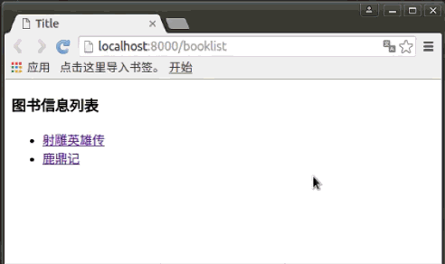

完成项目
项目效果示例：

基本知识点都学完了，接下来完成示例项目，现在还需要的代码包括三个方面，三个方面顺序不分先后。
- 1.定义视图
- 2.定义URL
- 3.定义模板
定义视图
编写booktest/views.py文件如下：
from django.shortcuts import render
from models import BookInfo
#首页，展示所有图书
def index(request):
#查询所有图书
booklist = BookInfo.objects.all()
#将图书列表传递到模板中，然后渲染模板
return render(request, 'booktest/index.html', {'booklist': booklist})
#详细页，接收图书的编号，根据编号查询，再通过关系找到本图书的所有英雄并展示
def detail(request, bid):
#根据图书编号对应图书
book = BookInfo.objects.get(id=bid)
#将图书信息传递到模板中，然后渲染模板
return render(request, 'booktest/detail.html', {'book': book})
定义URL
编写booktest/urls.py文件如下:
from django.conf.urls import url
#引入视图模块
from . import views
urlpatterns = [
#配置首页url
url(r'^$', views.index),
#配置详细页url，\d+表示多个数字，小括号用于取值，建议复习下正则表达式
url(r'^(\d+)$',views.detail),
]
定义模板
编写templates/booktest/index.html文件如下:
<html>
<head>
<title>首页</title>
</head>
<body>
<h1>图书列表</h1>
<ul>
{#遍历图书列表#}
{%for book in booklist%}
<li>
{#输出图书名称，并设置超链接，链接地址是一个数字#}
<a href="{{book.id}}">{{book.btitle}}</a>
</li>
{%endfor%}
</ul>
</body>
</html>
编写templates/booktest/detail.html文件如下:
<html>
<head>
<title>详细页</title>
</head>
<body>
{#输出图书标题#}
<h1>{{book.btitle}}</h1>
<ul>
{#通过关系找到本图书的所有英雄，并遍历#}
{%for hero in book.heroinfo_set.all%}
{#输出英雄的姓名及描述#}
<li>{{hero.hname}}---{{hero.hcontent}}</li>
{%endfor%}
</ul>
</body>
</html>